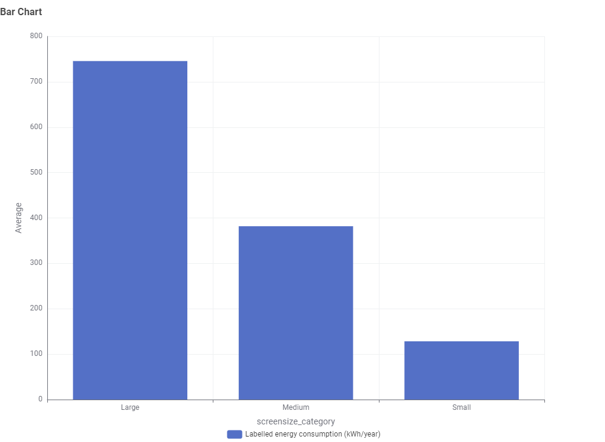
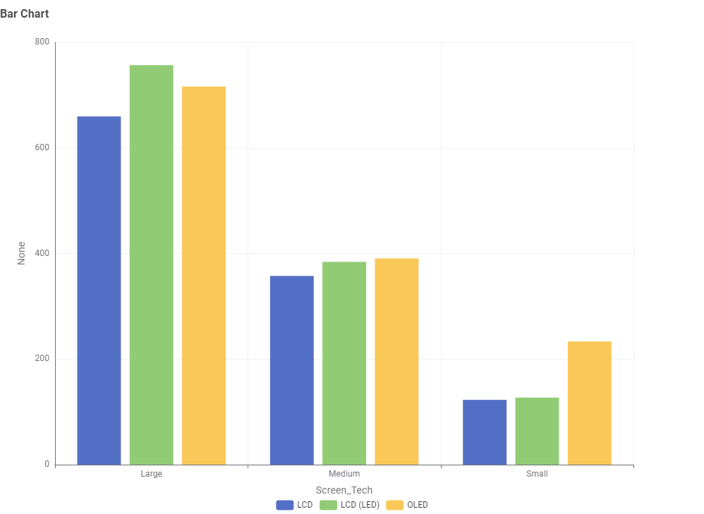

The Hidden Cost of Bigger TVs
When shopping for a new TV, we are often drawn to larger screens and stunning picture quality. But before bringing that massive entertainment display home, have you considered how much it will add to your electricity bill? Let's use data to uncover the relationship between screen size, panel technology, and energy consumption.
Insight 1: Does a bigger screen really mean significantly more power?
Many people assume modern technology is highly efficient, so buying a slightly larger TV won't make a big difference. However, the data tells a different story.

As clearly shown in the chart above, TV size is directly proportional to power consumption. The average annual energy consumption of a Large TV exceeds 700 kWh, which is nearly double that of a Medium TV (around 381 kWh). If you opt for a massive screen for a home theater experience, be prepared for a substantial increase in your electricity bill.
Insight 2: Are advanced OLED TVs more energy-efficient?
Since size dictates the baseline power consumption, what happens if we compare different panel technologies (LCD, LED, OLED) within the same size category?

This chart breaks down energy consumption by panel technology across different size categories. Interestingly, for Medium-sized TVs, OLED displays (the yellow bar, averaging around 390 kWh) actually consume slightly more power than traditional LCD/LED TVs.
Conclusion: While OLED provides ultimate contrast and perfect blacks, it is not the most energy-efficient option. For consumers looking to save on electricity bills, purchasing a Medium-sized LED TV represents the best balance between picture quality and running costs.